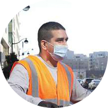
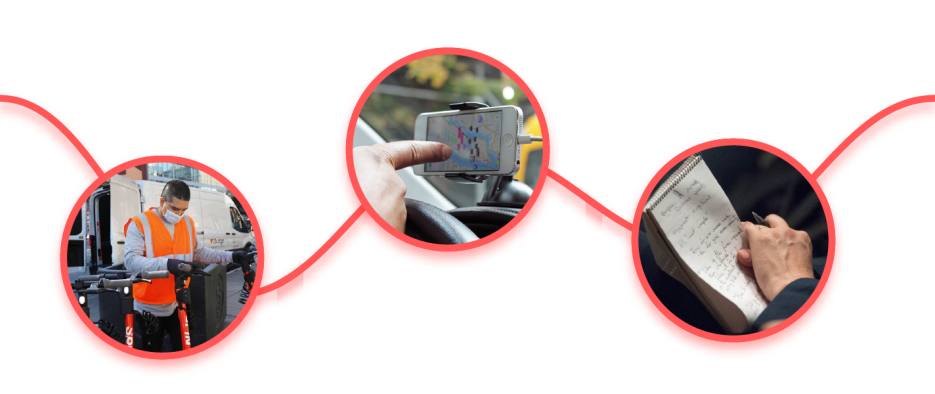
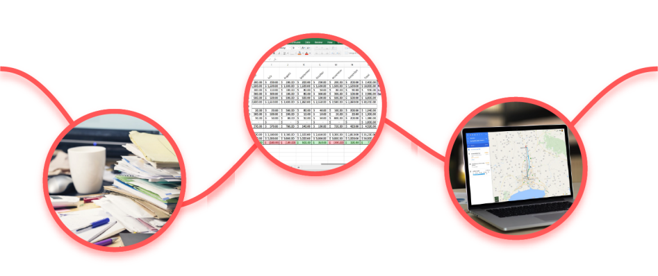
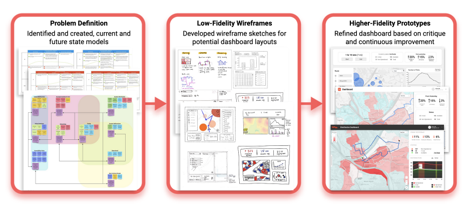
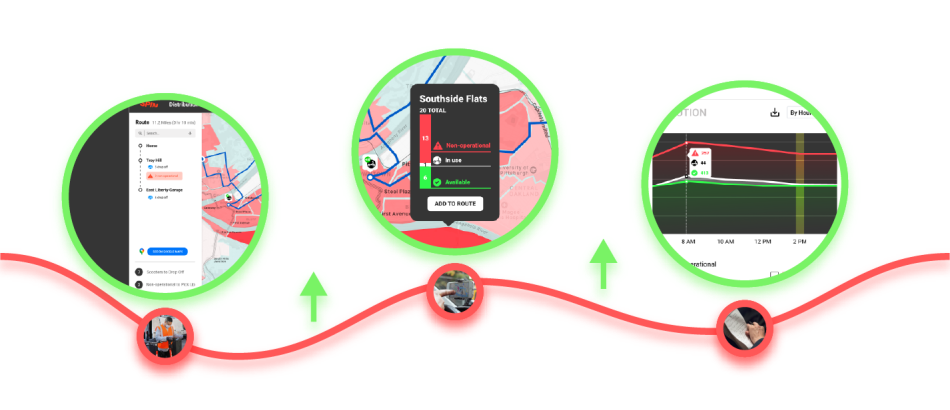
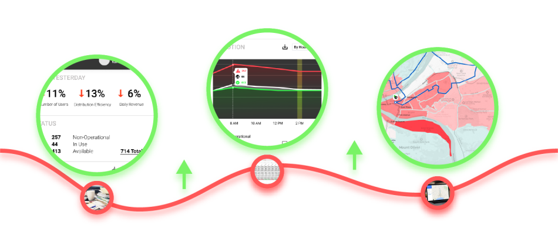

overview
For this project, my team was tasked with designing a data dashboard for spin employees to account for the lack of a fast entry point for data analysis at the company. In our final design, we determined what information would be most important to our end users and presented it through quickly comprehensible visualizations and seamless interactions.
problem
To better understand our end users and manage the scope of our project, we performed background research and centered our design around the needs of two defined personas. Here is a quick overview of them:
Kalen - Gig Worker
Kalen is a gig worker who travels around the city redistributing scooters to balance supply. He also brings in scooters to charge them and to do minor repairs between redistributions. He currently is working this job while he looks for another full-time position. He is looking to maximize his ability to move scooters while also having enough downtime to search for positions while he is taking a break. Also, repairing scooters gets him a bonus in his pay. He tries to make the most of each gas tank.
Kalen's Pain Points
“I usually take the popular Downtown-East Liberty route. This is normally the most efficient one, but that is not always the case…”
“Often times when I drive, I found myself checking the Spin app and updating Google Maps accordingly…”
“I tend to eyeball the best time to take a break so I am constantly worried about missing the action…”
Mia - Data Analyst
Mia is data analyst at Spin Scooters. She is tasked with understanding how well the scooter rollout in Pittsburgh is going. Her work will help the company determine where, when and how to increase or decrease scooter service in the city. She was recently promoted based on her data science acumen as well as her ability to tell stories with data. In here new role, she is focusing more on connecting with the business aspects rather than just data analysis.
Mia's Pain Points
“Typically, I pull up multiple spreadsheets on the computer and printed documents to figure out Today’s status…”
“I generally spend more than one work day collecting, cleaning, visualizing and formatting data…”
“There is no clear way for me to understand which neighborhoods have a poor distribution…”
process
We began our design process by creating current and future state models for our two personas to plan out the needs our product would address and
the changes it would create.
We then each brainstormed different options for data visualizations and wireframed ways to present them with a dashboard.
After receiving critique on our wireframes, we combined our ideas and proceeded to design the full dashboard over multiple iterations.
solution

Our final dashboard focuses on the intersection between Kalen and Mia’s needs, while also accounting for their specific tasks.
Kalen's Improved Journey
Route Planner
By swiping right on a tab to the left of the map, Kalen can easily open up a route planner from his tablet. This interaction also keeps the planner
unintrusive to Mia, who accesses the dashboard from her desktop.
With the route planner, Kalen is presented the most efficient route for him to complete all his tasks, while still having the flexibility to edit
this suggestion and add/remove stops if he pleases.
Detailed View
As Kalen goes along his route, he can see real-time scooter distribution information that was previously unavailable to him, look into specific areas on the map, and add them to his route.
Checking For Breaks
In the past, Kalen had a hard time to find the best time to take breaks while maintaining an efficient schedule. Now Kalen can easily identify the best time of the day to take break by glancing at a highlighted area of the time with lowest demand.
Summary of Improved Journey
The dashboard generates efficient and customizable routes for Kalen
He can track his route, visualize scooter distribution, and add stops on the go
The distribution chart highlights the best break times for him to interpret at a glance
Mia's Improved Journey

Status Overview
Mia now can track business performance and see the short-term effects of her decisions from the previous day.
She can also quickly ascertain the state of scooter distribution in real-time with the status section.
Distribution Graph
Rather than having to parse through data and create visualizations, Mia can identify the most important trends in scooter distributions using simple toggles and export visualizations of these trends to her presentations.
Heatmap
By looking at a heatmap of scooter demand, Mia can get a topological overview of scooter distribution in real-time or over periods of time, and redirect ads towards areas with the highest demand.
Summary of Improved Journey
The dashboard presents high-level summary statistics for Mia
She can analyze trends and download presentation graphics immediately
The map renders trends by time and location for her